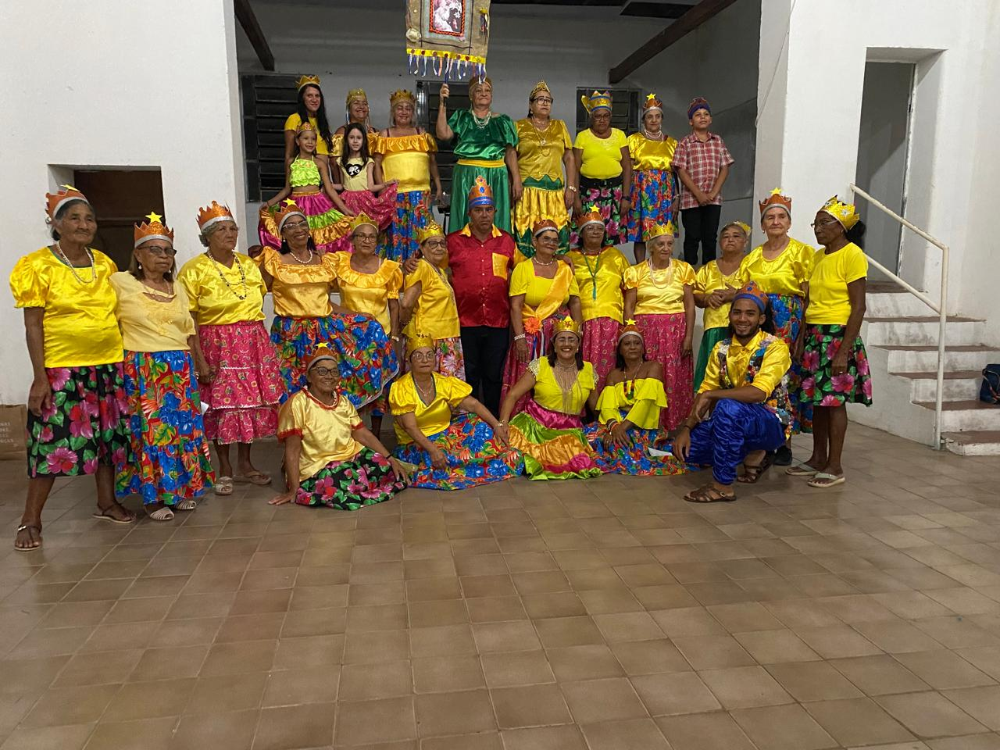

Nossa História
Celebrando cultura, dança e vida!
O Grupo da Saudade foi criado em 1995 durante as festas juninas da cidade, com o objetivo de transformar a vida dos idosos, oferecendo alegria, inclusão e saúde por meio da música e dança, especialmente o forró. Com o tempo, o grupo cresceu e passou a incluir jovens e crianças, reunindo cerca de 40 participantes apaixonados pelas tradições nordestinas. A dança se tornou uma ferramenta de transformação social, promovendo autoestima e fortalecendo os laços entre as gerações.
Além de preservar o patrimônio cultural local, o grupo mantém vivas manifestações como o reisado, o carnaval e as festas de São João, que estão sendo ameaçadas pelas culturas contemporâneas. Por meio de apresentações e projetos, o Grupo da Saudade assegura que as tradições populares nordestinas continuem emocionando e inspirando novas gerações, celebrando a vida, o pertencimento e a história do povo nordestino.
Galeria
Momentos especiais que guardamos na memória
Confira abaixo alguns registros das nossas apresentações.
